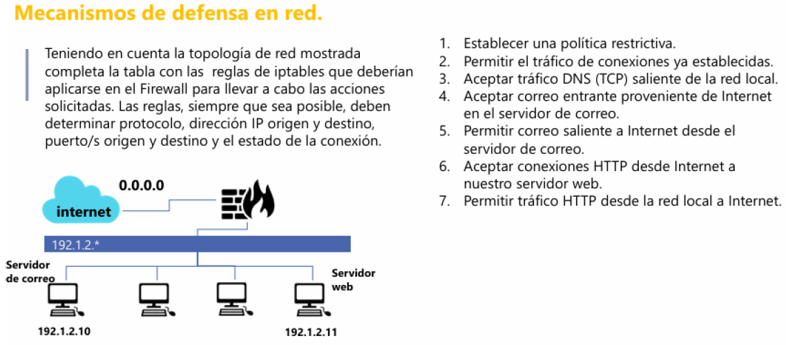

ACTIVIDAD #4
Reglas de Firewall (iptables)
Regla 1
Comando: iptables -P INPUT DROP && iptables -P OUTPUT DROP && iptables -P FORWARD DROP
- Establece política por defecto DROP para INPUT, OUTPUT y FORWARD.
- Bloquea todo el tráfico que no esté explícitamente permitido.
Regla 2
Comando: iptables -A INPUT -m state --state ESTABLISHED,RELATED -j ACCEPT
- Permite tráfico entrante de conexiones ya establecidas o relacionadas.
- Evita bloquear respuestas a conexiones legítimas.
Regla 3
Comando: iptables -A OUTPUT -p tcp -s 192.1.2.0/24 -j ACCEPT
- Permite tráfico TCP saliente desde la red 192.1.2.0/24.
- Habilita comunicación externa para esa subred.
Regla 4
Comando: iptables -A INPUT -p tcp -d 192.1.2.10 --dport 25 -m state --state NEW -j ACCEPT
- Permite nuevas conexiones TCP entrantes al puerto 25 (SMTP).
- Destino específico: 192.1.2.10 (servidor de correo).
Regla 5
Comando: iptables -A OUTPUT -p tcp -s 192.1.2.10 --sport 25 -j ACCEPT
- Permite tráfico saliente desde el puerto 25 del servidor 192.1.2.10.
- Autoriza respuestas del servicio SMTP.
Regla 6
Comando: iptables -A INPUT -p tcp -d 192.1.2.11 --dport 80 -m state --state NEW -j ACCEPT
- Permite nuevas conexiones TCP entrantes al puerto 80 (HTTP).
- Destino específico: 192.1.2.11 (servidor web).
Regla 7
Comando: iptables -A OUTPUT -p tcp -s 192.1.2.0/24 --dport 80 -j ACCEPT
- Permite tráfico TCP saliente hacia el puerto 80.
- Habilita navegación web desde la red 192.1.2.0/24.